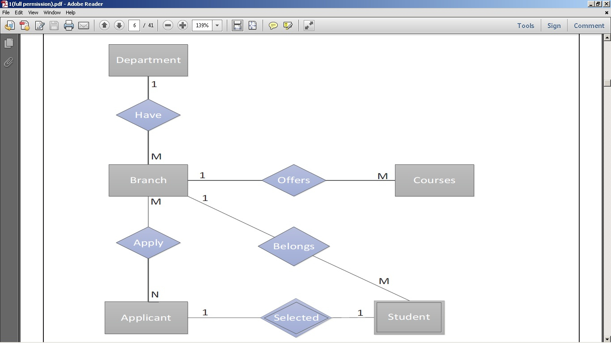
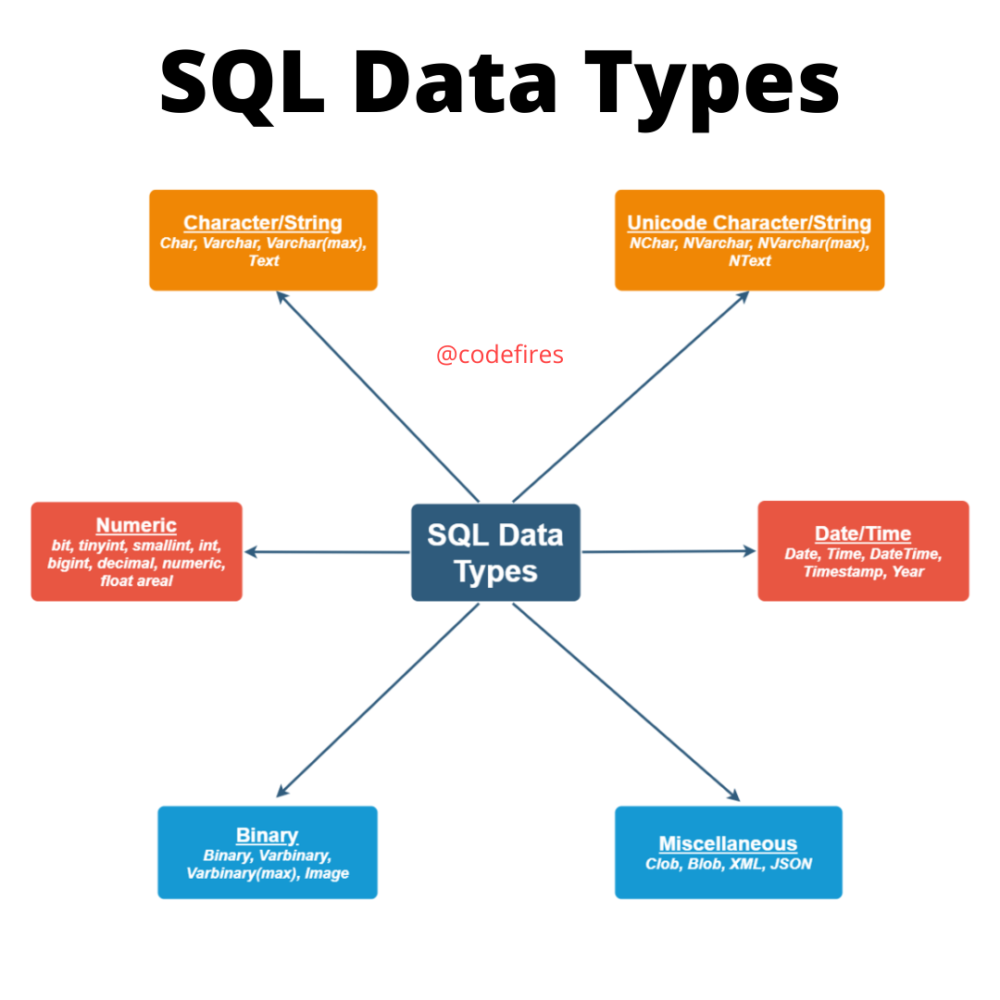
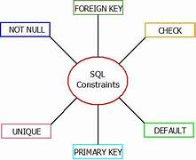
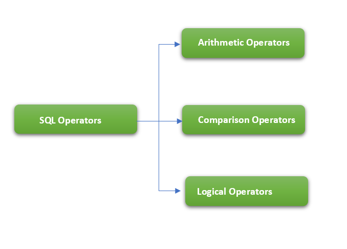
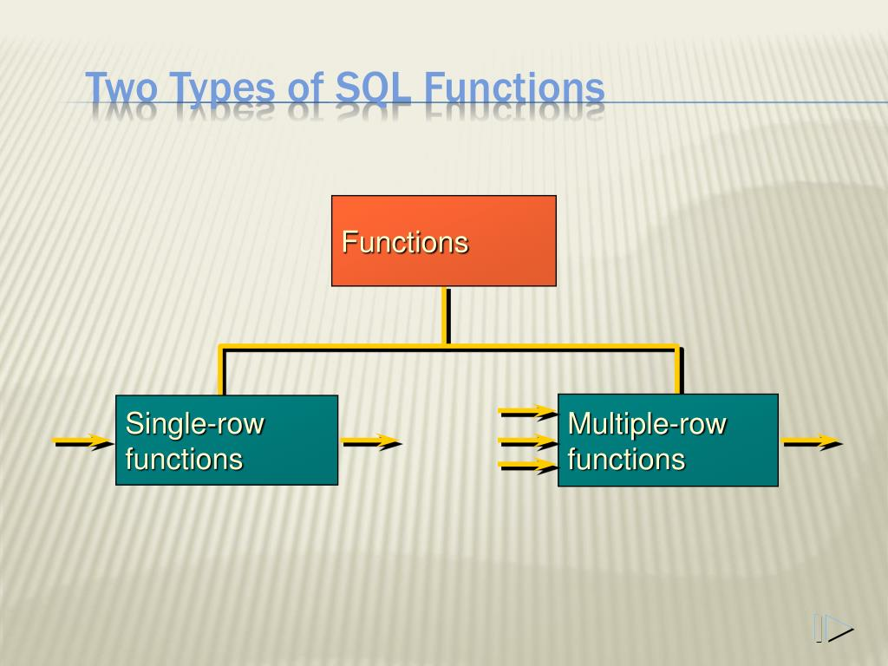
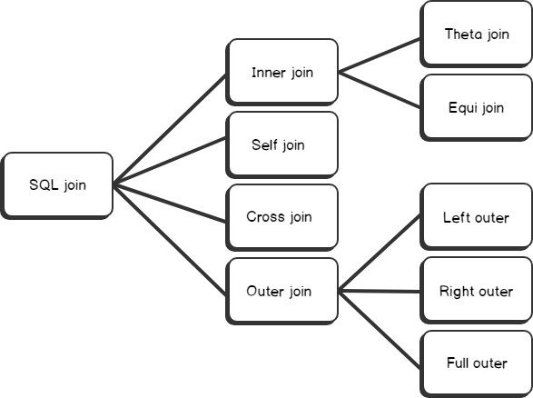
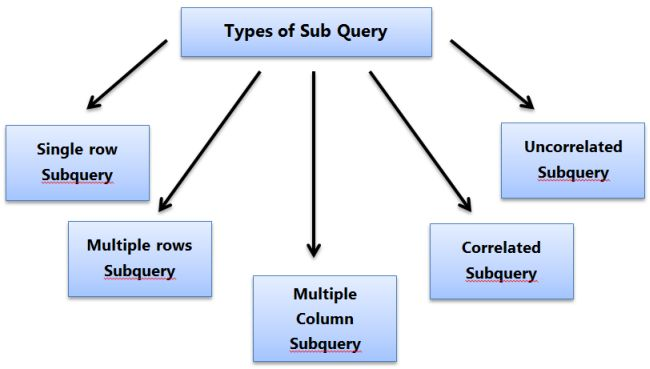

STRUCTURED QUERY LANGUAGE

About sql
SQL is a standard database language used to access and manipulate data in databases. SQL stands for Structured Query Language. SQL was developed by IBM Computer Scientists in the 1970s. By executing queries SQL can create, update, delete, and retrieve data in databases like MySQL, Oracle, PostgreSQL, etc. Overall SQL is a query language that communicates with databases.
Basics of SQL
- Er diagram
- Data types
- Constraints
- Operators
- Arithmetic Operators
- Comparison Operators
- Logical Operators
- Order by clause
- Functions
- Group by clause
- Having clause
- Subqueries
- Single row subquery
- Multi row subquery
- Correlated subquery
- Non Correlated subquery
- Joins
- Inner join
- Outer join
- Natural join
- Cross join
- Self join
- Indexes
- PLsql
- Normalisation
Er diagram

Data types in sql

Constraints

Operators

Functions

Joins

Types of Subqueries

Application of SQL
To support client/server architecture, software engineers use SQL to establish the connection between back-end and front-end.
SQL can also be used in the 3-tier architecture of a client, an application server, and a database.
SQL is used as a Data Definition Language(DDL) in which we can independently create a database, define the structure, use it, and discard it when its work is done.
SQL is used as a Data Manipulation Language(DML) in which we can enter data, modify data, extracting data.
SQL is used as a Data Control Language(DCL) it specifies how we can protect our database against corruption and misuse.